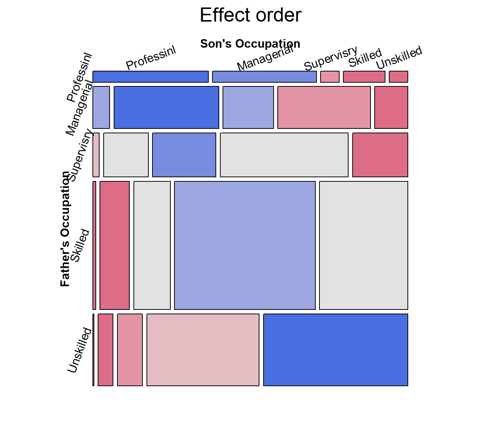
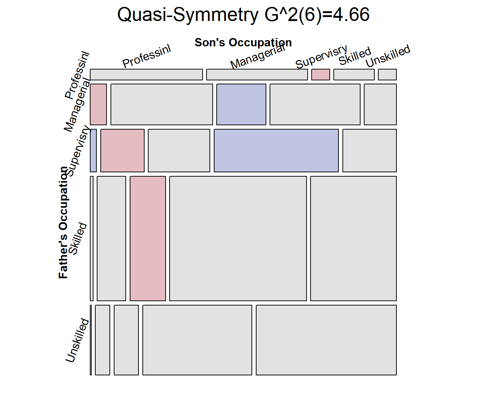
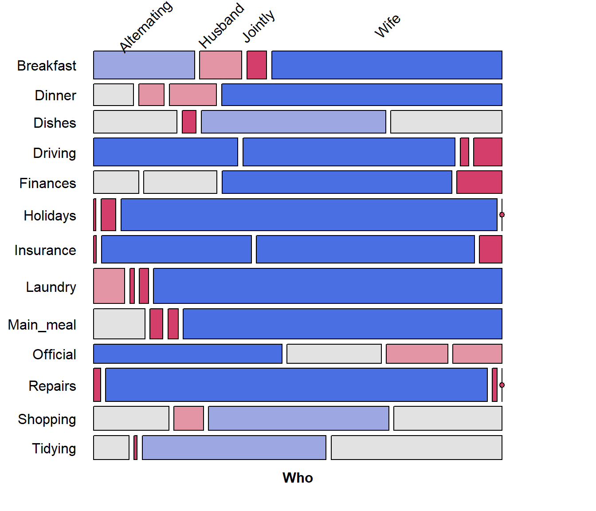
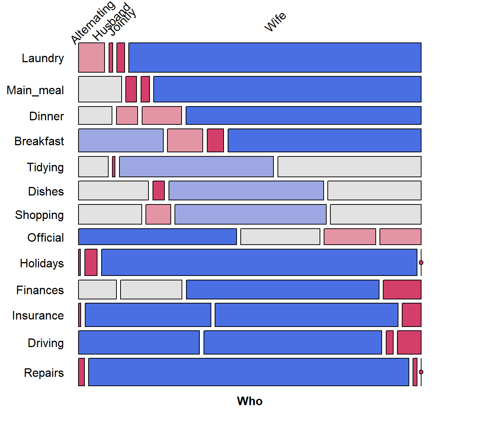

Mosaic plots provide an ideal method both for visualizing contingency tables and for visualizing the fit— or more importantly— lack of fit of a loglinear model.
For a two-way table, mosaic(), by default, fits a model
of independence, \([A][B]\) or
~A + B as an R formula. The vcdExtra package
extends this to models fit using glm(..., family=poisson),
which can include specialized models for ordered factors, or square
tables that are intermediate between the saturated model, \([A B]\) = A * B, and the
independence model \([A][B]\).
For \(n\)-way tables,
vcd::mosaic() can fit any loglinear model, and can also be
used to plot a model fit with MASS:loglm(). The
vcdExtra package extends this to models fit using
stats::glm() and, by extension, to non-linear models fit
using the gnm
package.
See Friendly (1994), Friendly (1999) for the statistical ideas behind these uses of mosaic displays in connection with loglinear models. Our book Friendly & Meyer (2016) gives a detailed discussion of mosaic plots and many more examples.
The essential ideas are to:
-
recursively sub-divide a unit square into rectangular “tiles” for the cells of the table, such that the area of each tile is proportional to the cell frequency. Tiles are split in a sequential order:
- First according to the marginal proportions of a first variable, V1
- Next according to the conditional proportions of a 2nd variable, V2 | V1
- Next according to the conditional proportions of a 3rd variable, V3 | {V1, V2}
- …
For a given loglinear model, the tiles can then be shaded in various ways to reflect the residuals (lack of fit) for a given model.
The pattern of residuals can then be used to suggest a better model or understand where a given model fits or does not fit.
mosaic() provides a wide range of options for the
directions of splitting, the specification of shading, labeling,
spacing, legend and many other details. It is actually implemented as a
special case of a more general class of displays for \(n\)-way tables called
strucplot, including sieve diagrams, association plots,
double-decker plots as well as mosaic plots.
For details, see help(strucplot) and the “See also”
links therein, and also Meyer, Zeileis, &
Hornik (2006), which is available as an R vignette via
vignette("strucplot", package="vcd").
Example: A mosaic plot for the Arthritis
treatment data fits the model of independence,
~ Treatment + Improved and displays the association in the
pattern of residual shading. The goal is to visualize the difference in
the proportions of Improved for the two levels of
Treatment : “Placebo” and “Treated”.
The plot below is produced with the following call to
mosaic(). With the first split by Treatment
and the shading used, it is easy to see that more people given the
placebo experienced no improvement, while more people given the active
treatment reported marked improvement.
data(Arthritis, package="vcd")
art <- xtabs(~Treatment + Improved, data = Arthritis)
mosaic(art, gp = shading_max,
split_vertical = TRUE,
main="Arthritis: [Treatment] [Improved]")
Mosaic plot for the Arthritis data, using
shading_max
gp = shading_max specifies that color in the plot
signals a significant residual at a 90% or 99% significance level, with
the more intense shade for 99%. Note that the residuals for the
independence model were not large (as shown in the legend), yet the
association between Treatment and Improved is
highly significant.
summary(art)
## Call: xtabs(formula = ~Treatment + Improved, data = Arthritis)
## Number of cases in table: 84
## Number of factors: 2
## Test for independence of all factors:
## Chisq = 13.055, df = 2, p-value = 0.001463In contrast, one of the other shading schemes, from Friendly (1994) (use:
gp = shading_Friendly), uses fixed cutoffs of \(\pm 2, \pm 4\), to shade cells which are
individually significant at approximately \(\alpha = 0.05\) and \(\alpha = 0.001\) levels, respectively. The
plot below uses gp = shading_Friendly.
mosaic(art, gp = shading_Friendly,
split_vertical = TRUE,
main="Arthritis: gp = shading_Friendly")
Mosaic plot for the Arthritis data, using
shading_Friendly
Permuting variable levels
Mosaic plots using tables or frequency data frames as input typically take the levels of the table variables in the order presented in the dataset. For character variables, this is often alphabetical order. That might be helpful for looking up a value, but is unhelpful for seeing and understanding the pattern of association.
It is usually much better to order the levels of the row and column variables to help reveal the nature of their association. This is an example of effect ordering for data display (Friendly & Kwan, 2003).
Example:
Data from Glass (1954) gave this 5 x 5 table on the occupations of 3500 British fathers and their sons, where the occupational categories are listed in alphabetic order.
data(Glass, package="vcdExtra")
(glass.tab <- xtabs(Freq ~ father + son, data=Glass))
## son
## father Managerial Professional Skilled Supervisory Unskilled
## Managerial 174 28 154 84 55
## Professional 45 50 18 8 8
## Skilled 150 14 714 185 447
## Supervisory 78 11 223 110 96
## Unskilled 42 3 320 72 411The mosaic display shows very strong association, but aside from the
diagonal cells, the pattern is unclear. Note the use of
set_varnames to give more descriptive labels for the
variables and abbreviate the occupational category labels. and
interpolate to set the shading levels for the mosaic.
largs <- list(set_varnames=list(father="Father's Occupation",
son="Son's Occupation"),
abbreviate=10)
gargs <- list(interpolate=c(1,2,4,8))
mosaic(glass.tab,
shade=TRUE,
labeling_args=largs,
gp_args=gargs,
main="Alphabetic order",
legend=FALSE,
rot_labels=c(20,90,0,70))
The occupational categories differ in status, and
can be reordered correctly as follows, from Professional
down to Unskilled.
# reorder by status
ord <- c(2, 1, 4, 3, 5)
row.names(glass.tab)[ord]
## [1] "Professional" "Managerial" "Supervisory" "Skilled" "Unskilled"The revised mosaic plot can be produced by indexing the rows and
columns of the table using ord.
mosaic(glass.tab[ord, ord],
shade=TRUE,
labeling_args=largs,
gp_args=gargs,
main="Effect order",
legend=FALSE,
rot_labels=c(20,90,0,70))
From this, and for the examples in the next section, it is useful to
re-define father and son as
ordered factors in the original Glass
frequency data.frame.
Glass.ord <- Glass
Glass.ord$father <- ordered(Glass.ord$father, levels=levels(Glass$father)[ord])
Glass.ord$son <- ordered(Glass.ord$son, levels=levels(Glass$son)[ord])
str(Glass.ord)
## 'data.frame': 25 obs. of 3 variables:
## $ father: Ord.factor w/ 5 levels "Professional"<..: 1 1 1 1 1 2 2 2 2 2 ...
## $ son : Ord.factor w/ 5 levels "Professional"<..: 1 2 3 4 5 1 2 3 4 5 ...
## $ Freq : int 50 45 8 18 8 28 174 84 154 55 ...Square tables
For mobility tables such as this, where the rows and columns refer to the same occupational categories it comes as no surprise that there is a strong association in the diagonal cells: most often, sons remain in the same occupational categories as their fathers.
However, the re-ordered mosaic display also reveals something subtler: when a son differs in occupation from the father, it is more likely that he will appear in a category one-step removed than more steps removed. The residuals seem to decrease with the number of steps from the diagonal.
For such tables, specialized loglinear models provide interesting
cases intermediate between the independence model, [A] [B], and the
saturated model, [A B]. These can be fit using glm(), with
the data in frequency form,
glm(Freq ~ A + B + assoc, data = ..., family = poisson)where assoc is a special term to handle a restricted
form of association, different from A:B which specifies the
saturated model in this notation.
Quasi-independence: Asserts independence, but ignores the diagonal cells by fitting them exactly. The loglinear model is: \(\log m_{ij} = \mu + \lambda^A_i + \lambda^B_j + \delta_i I(i = j)\), where \(I()\) is the indicator function.
Symmetry: This model asserts that the joint distribution of the row and column variables is symmetric, that is \(\pi_{ij} = \pi_{ji}\): A son is equally likely to move from their father’s occupational category \(i\) to another category, \(j\), as the reverse, moving from \(j\) to \(i\). Symmetry is quite strong, because it also implies marginal homogeneity, that the marginal probabilities of the row and column variables are equal, \(\pi{i+} = \sum_j \pi_{ij} = \sum_j \pi_{ji} = \pi_{+i}\) for all \(i\).
Quasi-symmetry: This model uses the standard main-effect terms in the loglinear model, but asserts that the association parameters are symmetric, \(\log m_{ij} = \mu + \lambda^A_i + \lambda^B_j + \lambda^{AB}_{ij}\), where \(\lambda^{AB}_{ij} = \lambda^{AB}_{ji}\).
The gnm package
provides a variety of these functions: gnm::Diag(),
gnm::Symm() and gnm::Topo() for an interaction
factor as specified by an array of levels, which may be arbitrarily
structured.
For example, the following generates a term for a diagonal factor in a \(4 \times 4\) table. The diagonal values reflect parameters fitted for each diagonal cell. Off-diagonal values, “.” are ignored.
rowfac <- gl(4, 4, 16)
colfac <- gl(4, 1, 16)
diag4by4 <- Diag(rowfac, colfac)
matrix(Diag(rowfac, colfac, binary = FALSE), 4, 4)
## [,1] [,2] [,3] [,4]
## [1,] "1" "." "." "."
## [2,] "." "2" "." "."
## [3,] "." "." "3" "."
## [4,] "." "." "." "4"Symm() constructs parameters for symmetric cells. The
particular values don’t matter. All that does matter is that the same
value, e.g., 1:2 appears in both the (1,2) and (2,1)
cells.
symm4by4 <- Symm(rowfac, colfac)
matrix(symm4by4, 4, 4)
## [,1] [,2] [,3] [,4]
## [1,] "1:1" "1:2" "1:3" "1:4"
## [2,] "1:2" "2:2" "2:3" "2:4"
## [3,] "1:3" "2:3" "3:3" "3:4"
## [4,] "1:4" "2:4" "3:4" "4:4"Example: To illustrate, we fit the four
models below, starting with the independence model
Freq ~ father + son and then adding terms to reflect the
restricted forms of association, e.g., Diag(father, son)
for diagonal terms and Symm(father, son) for symmetry.
library(gnm)
glass.indep <- glm(Freq ~ father + son,
data = Glass.ord, family=poisson)
glass.quasi <- glm(Freq ~ father + son + Diag(father, son),
data = Glass.ord, family=poisson)
glass.symm <- glm(Freq ~ Symm(father, son),
data = Glass.ord, family=poisson)
glass.qsymm <- glm(Freq ~ father + son + Symm(father, son),
data = Glass.ord, family=poisson)We can visualize these using the vcdExtra::mosaic.glm()
method, which extends mosaic displays to handle fitted glm
objects. Technical note: for models fitted using
glm(), standardized residuals,
residuals_type="rstandard" have better statistical
properties than the default Pearson residuals in mosaic plots and
analysis.
mosaic(glass.quasi,
residuals_type="rstandard",
shade=TRUE,
labeling_args=largs,
gp_args=gargs,
main="Quasi-Independence",
legend=FALSE,
rot_labels=c(20,90,0,70)
)
Mosaic plots for the other models would give further visual
assessment of these models, however we can also test differences among
them. For nested models, anova() gives tests of how much
better a more complex model is compared to the previous one.
# model comparisons: for *nested* models
anova(glass.indep, glass.quasi, glass.qsymm, test="Chisq")
## Analysis of Deviance Table
##
## Model 1: Freq ~ father + son
## Model 2: Freq ~ father + son + Diag(father, son)
## Model 3: Freq ~ father + son + Symm(father, son)
## Resid. Df Resid. Dev Df Deviance Pr(>Chi)
## 1 16 792.19
## 2 11 235.78 5 556.41 < 2.2e-16 ***
## 3 6 4.66 5 231.12 < 2.2e-16 ***
## ---
## Signif. codes: 0 '***' 0.001 '**' 0.01 '*' 0.05 '.' 0.1 ' ' 1Alternatively, vcdExtra::LRstats() gives model summaries
for a collection of models, not necessarily nested, with AIC and BIC
statistics reflecting model parsimony.
models <- glmlist(glass.indep, glass.quasi, glass.symm, glass.qsymm)
LRstats(models)
## Likelihood summary table:
## AIC BIC LR Chisq Df Pr(>Chisq)
## glass.indep 960.91 971.88 792.19 16 < 2.2e-16 ***
## glass.quasi 414.50 431.57 235.78 11 < 2.2e-16 ***
## glass.symm 218.18 236.47 37.46 10 4.704e-05 ***
## glass.qsymm 193.38 216.54 4.66 6 0.5876
## ---
## Signif. codes: 0 '***' 0.001 '**' 0.01 '*' 0.05 '.' 0.1 ' ' 1By all criteria, the model of quasi symmetry fits best. The residual
deviance $G^2 is not significant. The mosaic is largely unshaded,
indicating a good fit, but there are a few shaded cells that indicate
the remaining positive and negative residuals. For comparative mosaic
displays, it is sometimes useful to show the \(G^2\) statistic in the main title, using
vcdExtra::modFit() for this purpose.
mosaic(glass.qsymm,
residuals_type="rstandard",
shade=TRUE,
labeling_args=largs,
gp_args=gargs,
main = paste("Quasi-Symmetry", modFit(glass.qsymm)),
legend=FALSE,
rot_labels=c(20,90,0,70)
)
Correspondence analysis ordering
When natural orders for row and column levels are not given a priori, we can find orderings that make more sense using correspondence analysis.
The general ideas are that:
Correspondence analysis assigns scores to the row and column variables to best account for the association in 1, 2, … dimensions
The first CA dimension accounts for largest proportion of the Pearson \(\chi^2\)
Therefore, permuting the levels of the row and column variables by the CA Dim1 scores gives a more coherent mosaic plot, more clearly showing the nature of the association.
The seriation package now has a method to order variables in frequency tables using CA.
Example: As an example, consider the
HouseTasks dataset, a 13 x 4 table of frequencies of
household tasks performed by couples, either by the
Husband, Wife, Alternating or
Jointly. You can see from the table that some tasks
(Repairs) are done largely by the husband; some (laundry, main meal) are
largely done by the wife, while others are done jointly or alternating
between husband and wife. But the Task and Who
levels are both in alphabetical order.
data("HouseTasks", package = "vcdExtra")
HouseTasks
## Who
## Task Alternating Husband Jointly Wife
## Breakfast 36 15 7 82
## Dinner 11 7 13 77
## Dishes 24 4 53 32
## Driving 51 75 3 10
## Finances 13 21 66 13
## Holidays 1 6 153 0
## Insurance 1 53 77 8
## Laundry 14 2 4 156
## Main_meal 20 5 4 124
## Official 46 23 15 12
## Repairs 3 160 2 0
## Shopping 23 9 55 33
## Tidying 11 1 57 53The naive mosaic plot for this dataset is shown below, splitting
first by Task and then by Who. Due to the
length of the factor labels, some features of labeling were
used to make the display more readable.
require(vcd)
mosaic(HouseTasks, shade = TRUE,
labeling = labeling_border(rot_labels = c(45,0, 0, 0),
offset_label =c(.5,5,0, 0),
varnames = c(FALSE, TRUE),
just_labels=c("center","right"),
tl_varnames = FALSE),
legend = FALSE)
Correspondence analysis, using the ca package, shows that nearly 89% of the \(\chi^2\) can be accounted for in two dimensions.
require(ca)
## Loading required package: ca
HT.ca <- ca(HouseTasks)
summary(HT.ca, rows=FALSE, columns=FALSE)
##
## Principal inertias (eigenvalues):
##
## dim value % cum% scree plot
## 1 0.542889 48.7 48.7 ************
## 2 0.445003 39.9 88.6 **********
## 3 0.127048 11.4 100.0 ***
## -------- -----
## Total: 1.114940 100.0The CA plot has a fairly simple interpretation: Dim1 is largely the distinction between tasks primarily done by the wife vs. the husband. Dim2 distinguishes tasks that are done singly vs. those that are done jointly.
plot(HT.ca, lines = TRUE)
So, we can use the CA method of
seriation::seriate() to find the order of permutations of
Task and Who along the CA dimensions.
require(seriation)
order <- seriate(HouseTasks, method = "CA")
# the permuted row and column labels
rownames(HouseTasks)[order[[1]]]
## [1] "Laundry" "Main_meal" "Dinner" "Breakfast" "Tidying" "Dishes"
## [7] "Shopping" "Official" "Holidays" "Finances" "Insurance" "Driving"
## [13] "Repairs"
colnames(HouseTasks)[order[[2]]]
## [1] "Wife" "Alternating" "Jointly" "Husband"Now, use seriation::permute() to use order
for the permutations of Task and Who, and plot
the resulting mosaic:
# do the permutation
HT_perm <- permute(HouseTasks, order, margin=1)
mosaic(HT_perm, shade = TRUE,
labeling = labeling_border(rot_labels = c(45,0, 0, 0),
offset_label =c(.5,5,0, 0),
varnames = c(FALSE, TRUE),
just_labels=c("center","right"),
tl_varnames = FALSE),
legend = FALSE)
It is now easy to see the cluster of tasks (laundry and cooking) done largely by the wife at the top, and those (repairs, driving) done largely by the husband at the bottom.